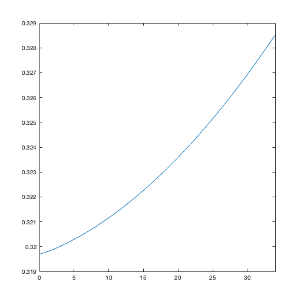

ASSIGNMENT 3
Contents
Question 1
a) The Electric field for 0.1V applied at one end is:
global C global Em T global BoundX BoundY global Pxp Px Pyp Py Vx Vy global Vtherm global nElectrons global t_mn C.q_0 = 1.60217653e-19; % electron charge C.hb = 1.054571596e-34; % Dirac constant C.h = C.hb * 2 * pi; % Planck constant C.m_0 = 9.10938215e-31; % electron mass C.kb = 1.3806504e-23; % Boltzmann constant C.eps_0 = 8.854187817e-12; % vacuum permittivity C.mu_0 = 1.2566370614e-6; % vacuum permeability C.c = 299792458; % speed of light C.g = 9.80665; % metres (32.1740 ft) per s² Em = 0.26 * C.m_0; % Mass of the Electron BoundX = 200e-9; % X boundary BoundY = 100e-9; % Y boundary T = 300; % Semiconductor temperature t_mn = 0.2e-12; % Mean time between collisions TimeSteps = 300; % Number of time steps nElectrons = 1000; % Number of electrons dt = 1e-14; % Time Step Efield = 0.1/BoundX
Efield = 5.0000e+05
b) The force is given by
Force = Efield * C.q_0
Force = 8.0109e-14
c) Acceleration and 2-D plot of particle trajectory.
Accel = Force/Em Pxp(1: nElectrons) = rand(nElectrons, 1) * BoundX; Pyp(1: nElectrons) = rand(nElectrons, 1) * BoundY; Vtherm = sqrt(2 * C.kb * T/Em); Vx(1: nElectrons) = randn(nElectrons, 1) * (Vtherm/sqrt(2)); Vy(1: nElectrons) = randn(nElectrons, 1) * (Vtherm/sqrt(2)); myColors = ['r' 'b' 'g' 'y' 'm' ]; myColorTyp = 1; Pscat = 1 - exp(-(dt/t_mn)); a = randi(nElectrons,5,1); % Current Density J = zeros(1,TimeSteps - 1); % I(1) = nElectrons * mean(abs(Vx)) * C.q_0 * BoundX * BoundY; TAvgp = 300; for i=2:TimeSteps Px(1: nElectrons) = Pxp(1: nElectrons) + (Vx .* dt); Py(1: nElectrons) = Pyp(1: nElectrons) + (Vy .* dt); %Apply 0.1V at one end Vx = Vx + ((1/2) * Accel * dt); if(Pscat > rand()) Vx(1: nElectrons) = randn(nElectrons, 1) * Vtherm; Vy(1: nElectrons) = randn(nElectrons, 1) * Vtherm; end Vy((Py>BoundY) | (Py<0)) = -Vy((Py>BoundY) | (Py<0)); for j=1:5 subplot(2,1,1); plot([Pxp(a(j)) Px(a(j))], [Pyp(a(j)) Py(a(j))],myColors(j)); xlim([0 BoundX]); ylim([0 BoundY]); end pause(0.1) hold on title('2-D plot of particle trajectories'); VxAbs = abs(Vx); VyAbs = abs(Vy); TAvg = (mean((VxAbs.^2)+ (VyAbs.^2)) * Em)/(2 * C.kb); subplot(2,1,2); plot([i-1 i],[TAvgp TAvg],'r'); xlim([0 TimeSteps]); ylim([0 2000]); pause(0.1) hold on title('Average Temperature'); Px(Px>BoundX) = Px(Px>BoundX)-BoundX; Px(Px<0) = BoundX; Pxp = Px; Pyp = Py; TAvgp = TAvg; J(i) = nElectrons * mean(abs(Vx)) * C.q_0; end
Accel = 3.3823e+17
d) The equation to calculate the current in a given region is:
J = n * V * Q
Where J is the current density, n is the number of electrons in the region and Q is the charge in Coulombs.
The figure below shows the current map in the region:
figure plot(linspace(2,TimeSteps,TimeSteps),J); title('Current Plot'); ylabel('J'); xlabel('TimeSteps');
e) Density and temperature plots
Vmag = sqrt(Vx.^2 + Vy.^2); Tmap = (Em * (Vmag.^2))./(2 * C.kb); mapX = linspace(min(Px), max(Px), 100); mapY = linspace(min(Py), max(Py), 50); [X,Y] = meshgrid(mapX, mapY); Tsurf = griddata(Px,Py,Tmap,X,Y); figure surf(Tsurf); title('Temperature Map'); Jx = linspace(0, BoundX, 100); Jy = linspace(0, BoundY, 50); CurrJ = histcounts2(Py, Px, Jy, Jx); figure surf(CurrJ); title('Current Map');
Question 2
clearvars
clearvars -GLOBAL close all set(0,'DefaultFigureWindowStyle', 'docked') %CONSTANTS AND VARIABLES global C global Em T global BoundX BoundY global Pxp Px Pyp Py Vx Vy global Vtherm global nElectrons global t_mn C.q_0 = 1.60217653e-19; % electron charge C.hb = 1.054571596e-34; % Dirac constant C.h = C.hb * 2 * pi; % Planck constant C.m_0 = 9.10938215e-31; % electron mass C.kb = 1.3806504e-23; % Boltzmann constant C.eps_0 = 8.854187817e-12; % vacuum permittivity C.mu_0 = 1.2566370614e-6; % vacuum permeability C.c = 299792458; % speed of light C.g = 9.80665; % metres (32.1740 ft) per s² Em = 0.26 * C.m_0; % Mass of the Electron BoundX = 200e-9; % X boundary BoundY = 100e-9; % Y boundary T = 300; % Semiconductor temperature t_mn = 0.2e-12; % Mean time between collisions TimeSteps = 1000; % Number of time steps nElectrons = 1000; % Number of electrons dt = 1e-14; % Time Step [Ex, Ey, Vmap] = Efield_FD(0.8);
a) Surface plot of V(x,y)
figure set(surf(Vmap),'linestyle', 'none'); colorbar; title('Surface plot of V(x,y)');
b) 2-D electric field vector plot
figure
quiver(Ex', Ey');
title('Electric field Plot');
c) 2-D particle trajectories
ForceX = (1e9)* Ex * C.q_0; ForceY = (1e9)* Ey * C.q_0; AccelX = ForceX/Em; AccelY = ForceY/Em; % BOX 1 Boundaries Box1Bnd1x = 0.8e-7; Box1Bnd1y = 1e-7; Box1Bnd2x = 1.2e-7; Box1Bnd2y = 1e-7; Box1Bnd3x = 1.2e-7; Box1Bnd3y = 0.6e-7; Box1Bnd4x = 0.8e-7; Box1Bnd4y = 0.6e-7; % BOX 2 Boundaries Box2Bnd1x = 0.8e-7; Box2Bnd1y = 0.4e-7; Box2Bnd2x = 1.2e-7; Box2Bnd2y = 0.4e-7; Box2Bnd3x = 1.2e-7; Box2Bnd3y = 0; Box2Bnd4x = 0.8e-7; Box2Bnd4y = 0; subplot(2,1,1); myBoxes(Box1Bnd1x, Box1Bnd1y, Box1Bnd2x, Box1Bnd2y, Box1Bnd3x, Box1Bnd3y, Box1Bnd4x, Box1Bnd4y); myBoxes(Box2Bnd1x, Box2Bnd1y, Box2Bnd2x, Box2Bnd2y, Box2Bnd3x, Box2Bnd3y, Box2Bnd4x, Box2Bnd4y); hold on %Check if electrons are within Box 1 and Box 2 x = randi(nElectrons,1); Pxp(1: x) = ((Box2Bnd4x - 0).*rand(x, 1))* BoundX; Pxp(x+1: nElectrons) = ((BoundX - Box2Bnd3x).*rand(nElectrons - x, 1) + Box2Bnd3x )* BoundX; Pxp(1: nElectrons) = rand(nElectrons, 1) * BoundX; Pyp(1: nElectrons) = rand(nElectrons, 1) * BoundY; Vtherm = sqrt(2 * C.kb * T/Em); Vx(1: nElectrons) = randn(nElectrons, 1) * (Vtherm/sqrt(2)); Vy(1: nElectrons) = randn(nElectrons, 1) * (Vtherm/sqrt(2)); myColors = ['r' 'b' 'g' 'y' 'm' ]; myColorTyp = 1; Pscat = 1 - exp(-(dt/t_mn)); a = randi(nElectrons,5,1); % Current Density J = zeros(1,TimeSteps - 1); % I(1) = nElectrons * mean(abs(Vx)) * C.q_0 * BoundX * BoundY; TAvgp = 300; for i=2:TimeSteps Px(1: nElectrons) = Pxp(1: nElectrons) + (Vx .* dt); Py(1: nElectrons) = Pyp(1: nElectrons) + (Vy .* dt); %Apply 0.1V at one end [x_bin, edge_x] = discretize(Px,200); [y_bin, edge_y] = discretize(Py,100); Vx = Vx + (1/2) * AccelX(sub2ind(size(AccelX),x_bin,y_bin))*dt; Vy = Vy + (1/2) * AccelY(sub2ind(size(AccelY),x_bin,y_bin))*dt; if(Pscat > rand()) Vx(1: nElectrons) = randn(nElectrons, 1) * Vtherm; Vy(1: nElectrons) = randn(nElectrons, 1) * Vtherm; end Vy((Py>BoundY) | (Py<0)) = -Vy((Py>BoundY) | (Py<0)); for j=1:5 subplot(2,1,1); plot([Pxp(a(j)) Px(a(j))], [Pyp(a(j)) Py(a(j))],myColors(j)); xlim([0 BoundX]); ylim([0 BoundY]); end pause(0.1) hold on title('2-D plot of particle trajectories'); VxAbs = abs(Vx); VyAbs = abs(Vy); TAvg = (mean((VxAbs.^2)+ (VyAbs.^2)) * Em)/(2 * C.kb); subplot(2,1,2); plot([i-1 i],[TAvgp TAvg],'r'); xlim([0 TimeSteps]); pause(0.1) hold on title('Average Temperature'); for k = 1:nElectrons if (Py(k) > Box1Bnd3y) && (Px(k) > Box1Bnd1x) && (Px(k) < Box1Bnd2x) if Pxp(k) > Box1Bnd2x && Px(k) < Box1Bnd2x Vx(k) = -Vx(k); Px(k) = 2 * Box1Bnd2x - Px(k); elseif Pxp(k) < Box1Bnd1x && Px(k) > Box1Bnd1x Vx(k) = -Vx(k); Px(k) = 2*Box1Bnd1x-Px(k); elseif Pyp(k) < Box1Bnd3y && Py(i) > Box1Bnd3y Vy(k) = -Vy(i); Py(k) = 2 * Box1Bnd3y - Py(k); end elseif (Py(k) <= Box2Bnd1y) && (Px(k) > Box2Bnd1x) && (Px(k) < Box2Bnd3x) if Pxp(k) > Box2Bnd3x && Px(k) < Box2Bnd3x Vx(k) = -Vx(k); Px(k) = 2 * Box2Bnd3x - Px(k); elseif Pxp(k) < Box2Bnd1x && Px(k) > Box2Bnd1x Vx(k) = -Vx(k); Px(k) = 2 * Box2Bnd1x - Px(k); elseif Pyp(i) > Box2Bnd1y && Py(k) < Box2Bnd1y Vy(k) = -Vy(k); Py(k) = 2 * Box2Bnd1y - Py(k); end end end Px(Px>BoundX) = Px(Px>BoundX)-BoundX; Px(Px<0) = BoundX; Pxp = Px; Pyp = Py; TAvgp = TAvg; J(i) = nElectrons * mean(abs(Vx)) * C.q_0; end
Question 3
a) Density plot Density Map
Jx = linspace(0, BoundX, 100); Jy = linspace(0, BoundY, 50); CurrJ = histcounts2(Py, Px, Jy, Jx); figure surf(CurrJ);
In the density map above, it can be observed that more electrons can be found on the side where the voltage was applied. Very few electrons get through the bottle neck as expected. this models resitance.
b) Plot of Current vs bottle neck
figure plot(Necksizes, Curr); xlim([0 max(Necksizes)])
c) One way to increase the accuracy of this simulation is to increase the amount of time and the number of electrons. Another way will be to increase the size or resoluton of the region being simulated.